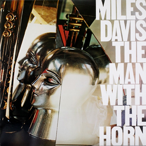

Music is my most important and prominent feature here. I am consumed by the endless facets music may entail. It is something that can give insight to a state of mind or even steer you towards one. One of the easiest ways to connect people and add enjoyment to any circumstance. Here is what I recommend.
First off, I would like to start with a fan-favorite, Miles Davis. I know his bebop era is the most notable and influential of his discography, but what I admire about Miles Davis, is that he knew music is ever-changing and did well to adapt to the evolving atmosphere. The Man With The Horn (1981) is a perfect introduction to 80's style music, with a slap bass, electric guitar, and synths, while still holding true to his spectacular trumpet melody. This album marked the comeback of Miles Davis, with many band features, vocals, and a jazz-rock vibe. Similar to Bitches Brew, which is also a great turning point album of his. My favorite track is Back Seat Betty. Give it a listen!
I am going to give you the band I listen to the most, however, do not expect this to be some underground discovery that I am putting you on to. If I do put you on then thats great. Beach House will indefinitely be my favorite band. They perfectly encapsulate the wide array of instruments and sequences you can use to create harmonic and melodic goodness. Some may say there are boring or too slow because they lack a certain upbeat scheme, but I think the beauty lies in the methodical components that deserve to be listened to with intentionality. They recently came to Oklahoma City recently and I nearly cried (who would want to come to Oklahoma of all places?) It was such an intimate and conceptual concert for me and I would like to share one of the clips.
There is a certain formula of enjoyment in this song that just scratches an itch in my ear. The piano hits all the right notes to cultivate a whimsical Bowie song and both guitars add a nice element to almost ground it. This also reminds me of "Belize" by Danger Mouse and MF Doom. From my code to your ears: